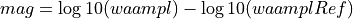

MLr¶
The MLr plugin is designed to use the MLv station amplitudes and provides a GNS/Geonet local magnitude. The magnitude uses a station correction term and the hypocentral distance. Hard coded range are 0-20 degrees maximum distance and 800 km maximum depth. (Reference:”A Revised Local Magnitude (ML) Scale for New Zealand Earthquakes” J. Ristau, D. Harte, J. Salichon, BSSA Mar 2016, DOI: 10.1785/0120150293)
Description¶
Station Magnitude¶
Magnitude based on SED MLh magnitude The MLr plugin calculates the individual station local magnitude using the following formula:


waampl is the amplitude produced by the MLr plugin. Hypdistkm is the distance from the sensor to the hypocenter in kilometers. A(station) Station correction is given by module.trunk.NZ.WEL.MLR.params, A. Station Correction is set to be distance dependent: Format: “UpToKilometers A ; UpToNextKilometers A “. Option “nomag” disable the station magnitude.
Amplitude unit in SeisComP: millimeter (mm) from MLv
Time window: 150 s by scautopick or distance dependent
Distance range: 0 - 20 deg
Depth range: 0 - 800 km
Overall Event Magnitude¶
The GNS/Geonet Mlr local magnitude is using the default Sc3 behaviour for the automatic network magnitudes. Hard-coded ranges are 0-20 degrees maximum distance and 800 km maximum depth.